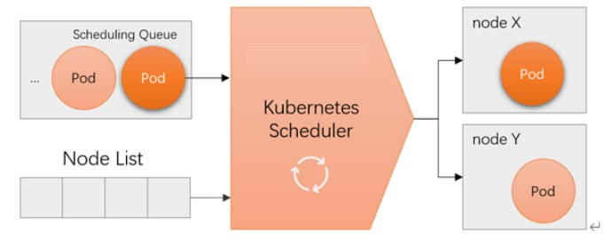
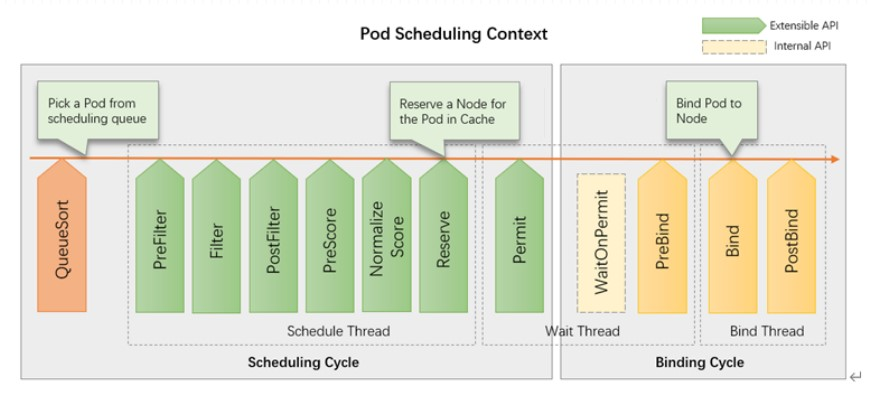

Scheduler调度器
当一个pod出现在API-Server中，且其尚未绑定到任何节点时，就需要进行调度。
1 | # 未绑定是指nodeName没有指定，如果定义了那么调度器就无需工作，直接在指定节点上运行起来 |
调度器基本工作逻辑
Scheduler会专门监控API-Server上Pod资源中NodeName字段是否为空，若为空就会启动调度功能。为该Pod从众多节点中挑选出一个最佳的节点。并将挑选出的节点填入API-Server上Pod资源的NodeName中。各节点上的kubelet会监控API-Server上的所有Pod，当有Pod的NodeName为自己时，kubelet会将其拉到自己的节点上运行。

调度器的算法
当集群中存在多个节点，究竟应该让Pod运行在哪个节点之上，这就得需要一些挑选的标准，这些挑选的标准就称为调度器的算法。
k8s自己提供的调度算法default-schedule（经典调度算法），从1.16后k8s引入了新的调度框架在1.19以后完全取代了经典调度算法。
取代的原调度算法是应为经典调度算法不一定适合某些场景。
经典调度算法逻辑
经典调度算法分为以下几步：
- kube-scheduler始终观察
API-Server是否存在pod.spec.nodeName字段为空的pod。如果存在则进行调度。- 使用一种方式从当前所有节点中排除所有有无法运行该pod的节点，这步骤称之为预选。
- 把不符合条件的全部排除后，对符合条件的节点进行排序，使用优先级函数对各符合条件的节点进行打分，打分后进行排序，然后选择排序第一的节点，这一步骤叫做优选。
- 如果存在多个节点得分相同时，就会从各节点中随机选择一个节点，这个步骤叫选中。
- 将选中的节点写入pod.spec.nodeName中后保存到API Server
经典的调度算法适合大部分的场景，但必定存在无法满足的特殊场景。这时候就需要对原有的调度器进行扩展。
经典调度器扩展方式
经典调度器的扩展方式有两种
- 在原有的调度器(default scheduler)之外，自己开发调度器(customed scheduler)，当调度某些特定pod时让API Server来加载自定义的调度器。
1 | # 加载特定Scheduler方法 |
- 在
default-scheduler上启用一个扩展接口，让扩展接口调度某个pod时在预选开始之前调用预选的扩展接口来调用外部预选函数一起工作。优选和选中也使用相同的逻辑进行加载，最终绑定到节点上。这种扩展的效率底下，且支持predicate、priority、bind三个扩展点。必须再对应扩展点种扩展。
新式调度框架

k8s在v1.16上引入了一个新的调度框架，这个调度框架把整个调度流程分成了调度周期和绑定周期两个阶段。
其中在调度周期上分成了多个扩展点。调度周期种由调度线程专门负责，而绑定周期由绑定线程专门负责。在调度和绑定之间存在一个等待阶段。
QueueSort
任何一个被调度的pod会存在一个pod调度队列的算法对pod等待队列进行排序。
pod排序可以通过以下几个字段进行排序：
- pod.spec.priority：定义pod优先级
- pod.spec.priorityClassName：定义多个优先级的类别，让pod属于某个优先级类别
- pod.spec.preemptionPolicy：优先级抢占，当调度某个pod，在当前节点上都没有资源时，可以从节点上找一个pod进行驱逐，然后让该pod运行。
如果需要自定排序算法可以在QueueSort上写一个优先级排序算法。
Scheduing Cycle
pod排序过后就进入的调度周期，调度周期分为预选、优选、选中。
预选又分为了3个步骤：
- PreFilter: 过滤前做一些预处理操作
- Filter：扩展过滤算法
- PostFilter：扩展过滤后的算法，做一些收尾或清理操作
优选操作分为以下几步：
- PreScore：打分前操作，如可以为某个节点提高打分。
- Normalize Score：打分操作。
- Reserve：此步未启用
- Permit：准入，通过PreScore、Normalize Score.
Binding Cycle
通过Scheduing Cycle之后进入绑定周期：
- preBind：在绑定之前需要做一些准备
- Bind：进行绑定
- PostBind：绑定后操作
经典调度函数和应用次序
这些用于节点过滤的预选函数负责根据指定判定标准及各Node对象和当前Pod对象能否适配，它们按照用于实现的主要目标大体可分为如下几类。
- 节点存储卷数量限制检测：MaxEBSVolumeCount、MaxGCEPDVolumeCount、 MaxCSIVolumeCount、MaxAzureDiskVolumeCount和MaxCinderVolumeCount。
- 检测节点状态是否适合运行Pod：CheckNodeUnschedulable和CheckNodeLabelPresence。
- Pod与节点的匹配度检测：Hostname、PodFitsHostPorts、MatchNodeSelector、NoDiskConflict、PodFitsResources、PodToleratesNodeTaints、PodToleratesNodeNoExecuteTaints、CheckVolumeBinding和NoVolumeZoneConflict
- Pod间的亲和关系判定：MatchInterPodAffinity。
- 将一组Pod打散至集群或特定的拓扑结构中：CheckServiceAffinity和EvenPodsSpread。
预选函数
在Kubernetes Scheduler上启用相应的预选函数才能实现相关调度机制的节点过滤需求，下面给出了这些于Kubernetes v1.17版本中支持的各预选函数的简要功能，其中仅ServiceAffinity和CheckNodeLabelPresence支持自定义配置，余下的均为静态函数。
CheckNodeUnschedulable：检查节点是否被标识为Unschedulable，以及是否可将Pod调度于该类节点之上。HostName：若Pod资源通过spec. nodeName明确指定了要绑定的目标节点，则节点名称与与该字段值相同的节点才会被保留。PodFitsHostPorts：若Pod容器定义了ports.hostPort属性，该预选函数负责检查其值指定的端口是否已被节点上的其他容器或服务所占用，该端口已被占用的节点将被过滤掉。MatchNodeSelector：若Pod资源规范上定义了spec.nodeSelector字段，则仅那些拥有匹配该标签选择器的标签的节点才会被保留。NoDiskConflict：检查Pod对象请求的存储卷在此节点是否可用，不存在冲突则通过检查。PodFitsResources：检查节点是否有足够资源（例如 CPU、内存和GPU等）满足Pod的运行需求；节点声明其资源可用容量，而Pod定义其资源需求（requests），于是调度器会判断节点是否有足够的可用资源运行Pod对象，无法满足则返回失败原因（例如，CPU或内存资源不足等）；调度器的评判资源消耗的标准是节点已分配资源量（各容器的requests值之和），而非其上的各Pod已用资源量，但那些在注解中标记为关键性（critical）的Pod资源则不受该预选函数控制。PodToleratesNodeTaints：检查Pod的容忍度（spec.tolerations字段）是否能够容忍该节点上的污点（taints），不过，它仅关注具有NoSchedule和NoExecute两个效用标识的污点。PodToleratesNodeNoExecuteTaints：检查Pod的容忍度是否能接纳节点上定义的NoExecute类型的污点。CheckNodeLabelPresence：检查节点上某些标签的存在性，要检查的标签以及其可否存在则取决于用户的定义；在集群中的部署节点以regions/zones/racks类标签的拓扑方式编制，且基于该类标签对相应节点进行了位置标识时，预选函数可以根据位置标识将Pod调度至此类节点之上。CheckServiceAffinity：根据调度的目标Pod对象所属的Service资源已关联的其他Pod对象的位置（所运行节点）来判断当前Pod可以运行的目标节点，其目的在于将同一Service对象的Pod放置在同一拓扑内（如同一个rack或zone）的节点上以提高效率。MaxEBSVolumeCount：检查节点上已挂载的EBS存储卷数量是否超过了设置的最大值。MaxGCEPDVolumeCount：检查节点上已挂载的GCE PD存储卷数量是否超过了设置的最大值，默认值为16。MaxCSIVolumeCount：检查节点上已挂载的CSI存储卷数量是否超过了设置的最大值。MaxAzureDiskVolumeCount：检查节点上已挂载的Azure Disk存储卷数量是否超过了设置的最大值，默认值为16。MaxCinderVolumeCount：检查节点上已挂载的Cinder存储卷数量是否超过了设置的最大值。CheckVolumeBinding：检查节点上已绑定和未绑定的PVC是否能满足Pod的存储卷需求，对于已绑定的PVC，此预选函数检查给定节点是否能兼容相应PV，而对于未绑定的PVC，预选函数搜索那些可满足PVC申请的可用PV，并确保它可与给定的节点兼容。NoVolumeZoneConflict：在给定了存储故障域的前提下，检测节点上的存储卷是否可满足Pod定义的需求。EvenPodsSpread：检查节点是否能满足Pod规范中topologySpreadConstraints字段中定义的约束以支持Pod的拓扑感知调度。MatchInterPodAffinity：检查给定节点是否能满足Pod对象的亲和性或反亲和性条件，用于实现Pod亲和性调度或反亲和性调度。
优选函数
LeastRequestedPriority：优先将Pod打散至集群中的各节点之上，以试图让各节点有着近似的计算资源消耗比例，适用于集群规模较少变动的场景；其分值由节点空闲资源与节点总容量的比值计算而来，即由CPU或内存资源的总容量减去节点上已有Pod对象需求的容量总和，再减去当前要创建的Pod对象的需求容量得到的结果除以总容量；CPU和内存具有相同权重，资源空闲比例越高的节点得分也就越高，其计算公式如为：(cpu((capacity – sum(requested)) * 10 / capacity) + memory((capacity – sum(requested)) * 10 / capacity))/ 2。MostRequestedPriority：与优选函数LeastRequestedPriority的评估节点得分的方法相似，但二者不同的是，当前函数将给予计算资源占用比例更大的节点以更高的得分，计算公式如为：(cpu((sum(requested)) * 10 / capacity) + memory((sum(requested)) * 10 / capacity))/ 2。该函数的目标在于优先让节点以满载的方式承载Pod资源，从而能够使用更少的节点数，因而较适用于节点规模可弹性伸缩的集群中以最大化地节约节点数量。BalancedResourceAllocation：以CPU和内存资源占用率的相近程度作为评估标准，二者越接近的节点权重越高。该优选函数不能单独使用，它需要和LeastRequestedPriority组合使用来平衡优化节点资源的使用状态，选择那些在部署当前Pod资源后系统资源更为均衡的节点。ResourceLimitsPriority：以是否能够满足Pod资源限制为评估标准，那些能够满足Pod对于CPU或（和）内存资源限制的节点将计入1分，节点未声明可分配资源或Pod未定义资源限制时不影响节点计分。RequestedToCapacityRatio：该函数允许用户自定义节点各类资源（例如CPU和内存等）的权重，以便提高大型集群中稀缺资源的利用率；该函数的行为可以通过名为requestedToCapacityRatioArguments的配置选项进行控制，它由shape和resources两个参数组成。NodeAffinityPriority：节点亲和调度机制，它根据Pod资源规范中的spec.nodeSelector来对给定节点进行匹配度检查，成功匹配到的条目越多则节点得分越高。不过，其评估过程使用PreferredDuringSchedulingIgnoredDuringExecution这一表示首选亲和的标签选择器。ImageLocalityPriority：镜像亲和调度机制，它根据给定节点上是否拥有运行当前Pod对象中的容器所依赖到的镜像文件来计算该节点的得分值。那些不具有该Pod对象所依赖到的任何镜像文件的节点得分为0，而那些存在相关镜像文件的各节点中，拥有被Pod所依赖到的镜像文件的体积之和越大的节点得分就会越高。TaintTolerationPriority：基于对Pod资源对节点的污点容忍调度偏好进行其优先级评估，它将Pod对象的tolerations列表与节点的污点进行匹配度检查，成功匹配的条目越多，则节点得分越低。SelectorSpreadPriority：尽可能分散Pod至不同节点上的调度机制，它首先查找标签选择器能够匹配到当前Pod标签的ReplicationController、ReplicaSet和StatefulSet等控制器对象，而后查找可由这类对象的标签选择器匹配到的现存各Pod对象及其所在的节点，而那些运行此类Pod对象越少的节点得分越高。简单来说，如其名称所示，此优选函数尽量把同一标签选择器匹配到的Pod资源打散到不同的节点上运行。ServiceSpreadingPriority：类似于SelectorSpreadPriority，它首先查找标签选择器能够匹配到当前Pod标签的Service对象，而后查找可由这类Service对象的标签选择器匹配到的现存各Pod对象及其所在的节点，而那些运行此类Pod对象越少的节点得分越高。EvenPodsSpreadPriority：用于将一组特定的Pod对象在指定的拓扑结构上进行均衡打散，打散条件定义在Pod对象的spec.topologySpreadConstraints字段上，它内嵌labelSelector指定标签选择器以匹配符合条件的Pod对象，使用topologyKey指定目标拓扑结构，使用maxSkew描述最大允许的不均衡数量，而无法满足指定的调度条件时的评估策略则由whenUnsatisfiable字段定义，它有两个可用取值，默认值DoNotSchedule表示不予调度，而ScheduleAnyway则表示以满足最小不均衡值的标准进行调度。EqualPriority：设定所有节点具有相同的权重1。InterPodAffinityPriority：遍历Pod对象的亲和性条目，并将那些能够匹配到给定节点的条目的权重相加，结果值越大的节点得分越高。NodePreferAvoidPodsPriority：此优选级函数权限默认为10000，它根据节点是否设置了注解信息scheduler.alpha.kubernetes.io/preferAvoidPods来计算其优选级。计算方式是，给定的节点无此注解信息时，其得分为10乘以权重10000，存在此注解信息时，对于那些由ReplicationController或ReplicaSet控制器管控的Pod对象的得分为0，其他Pod对象会被忽略（得最高分）。
配置新式调度器
调度器资源定义规范
1 | # 配置调度器 |
新式调度器配置示例
准备调度器配置
配置示例1
1 | root@k8s-master01:~/yaml/chapter11# vim kubeschedconf-v1alpha1-demo.yaml |
配置实例2
1 | root@k8s-master01:~/yaml/chapter11# vim kubeschedconf-v1beta1-demo.yaml |
让调度器加载配置
1.将配置文件放到指定目录下
1 | root@k8s-master01:~/yaml/chapter11# mkdir /etc/kubernetes/scheduler |
2.对scheduler自身的yaml文件进行修改
1 | root@k8s-master01:~# vim /etc/kubernetes/manifests/kube-scheduler.yaml |
3.查看pod是否正常运行
1 | root@k8s-master01:~# kubectl get pods -n kube-system kube-scheduler-k8s-master01 |
验证调度
1.创建出deployment配置清单，在pod模板中指定使用的调度器名字为刚创建的demo-scheduler
1 | root@k8s-master01:~/yaml/chapter11# vim deployment-demo.yaml |
2.创建deployment
1 | root@k8s-master01:~/yaml/chapter11# VERSION=v1.0 envsubst < deployment-demo.yaml | kubectl apply -f - |
3.查看调度效果
1 | root@k8s-master01:~/yaml/chapter11# kubectl get pods -o wide |